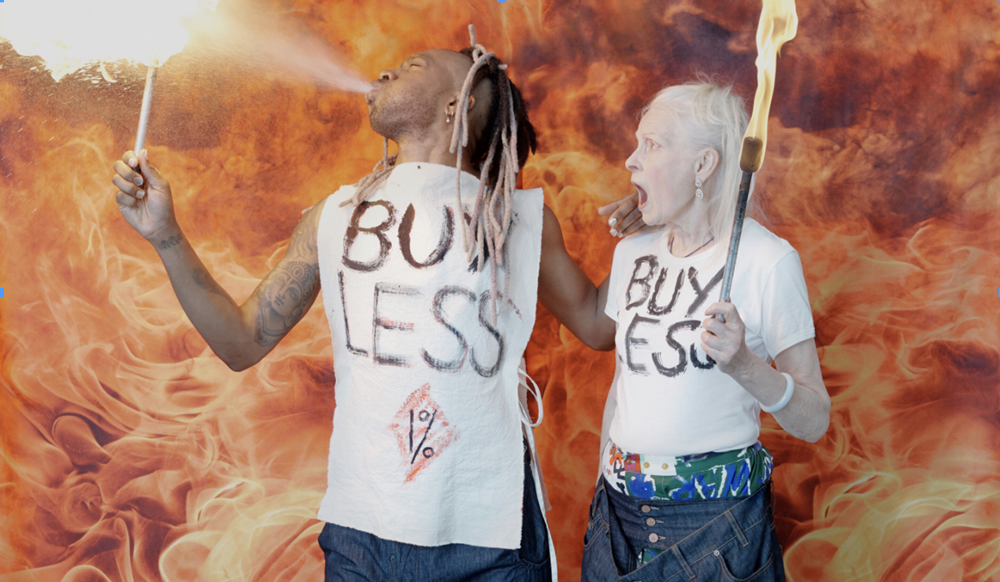
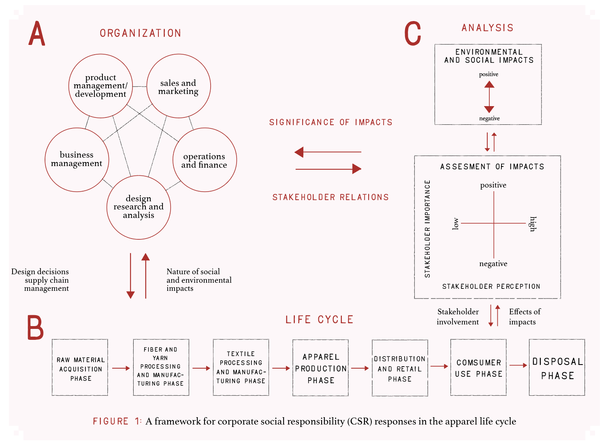
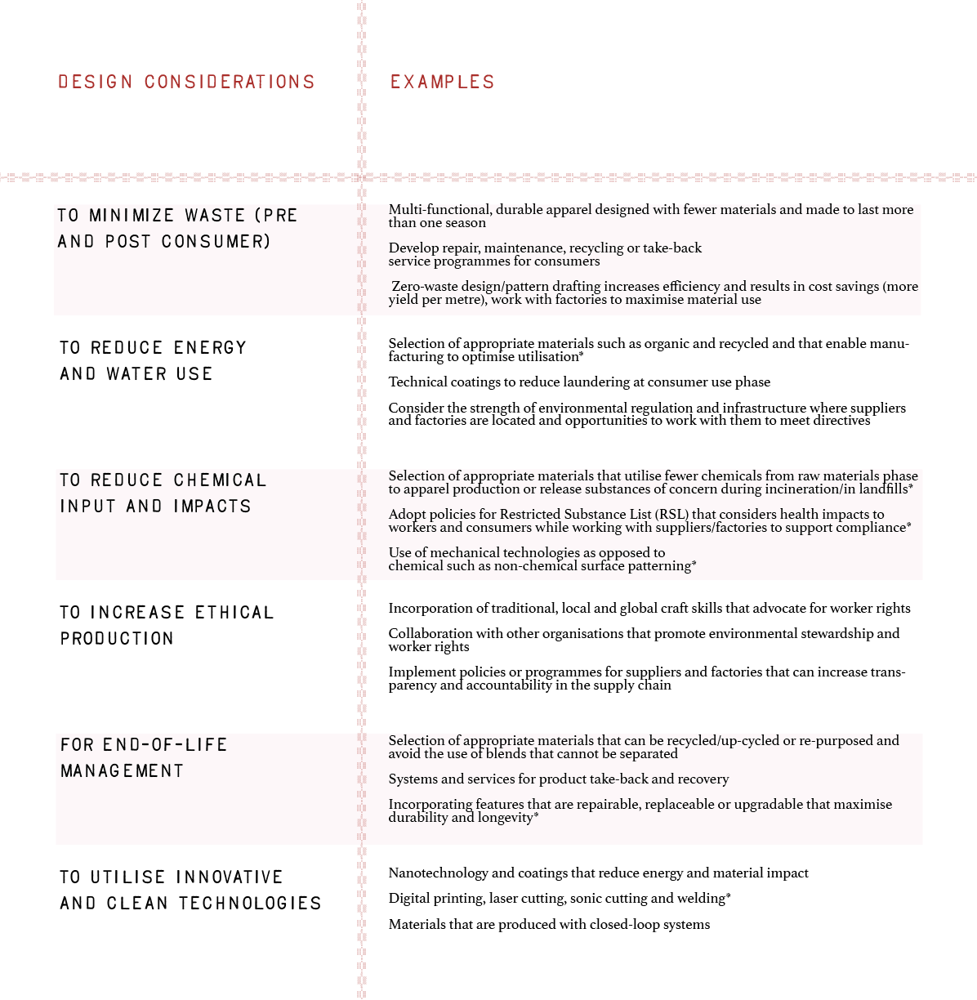

a life-cycle and stakeholder framework
ANITA KOZLOWSKI, DR. MICHAL BARDECKI, CORY SEARCY
The fashion industry has been increasingly under the spotlight as a significant contributor to global environmental and social issues. Life-cycle assessment is a standard tool used to investigate the environmental impacts of all stages of a product’s life. Life-cycle assessment, however, is generally not extended to the consideration of social issues. On the other hand, stakeholder analysis is a systematic process of identifying individuals and groups whose interests should be taken into account when developing a policy or a programme. This paper provides a conceptual and analytical framework by conflating life-cycle and stakeholder analyses to develop responses for the fashion industry. The paper illustrates that identification of stakeholders and their interests, responsibilities and accountability can provide a basis for the development and implementation of appropriate policies and programmes to respond to environmental and social concerns within the context of corporate social responsibility.
The fashion industry has been subject to pivotal trends over the last two to three decades. The industry has evolved into a complex, fragmented, global system which at its very core is based on the notion of continual consumption of the ‘new’ and the discard of the ‘old’. The emergence of the ‘fast fashion’ business model has increased the introduction of trends leading to premature product replacement and fashion obsolescence. It also has major negative environmental and social impacts, particularly on those at the bottom of the supply chain (Allwood et al. 2006; Lee 2007; Hethorn and Ulasewicz 2008). Delocalised production in developing nations has become a prevalent choice because of the low-cost labour and less stringent standards and regulations surrounding social and environmental issues (Allwood et al. 2006; Hethorn and Ulasewicz 2008). Social impacts such as worker rights, poor working conditions, long hours, low wages, child labour and health and safety issues are still problems of concern in developing nations (Madsen et al. 2007). The decrease in the price of apparel, and faster trend cycles coupled with low quality and planned obsolescence (Fletcher 2008) have led to an increase in the volume of clothes consumed globally. There are significant issues with apparel waste as the majority of clothing and textile waste ends up in landfills as opposed to being recycled or re-used (Allwood et al. 2006; Madsen et al. 2007; Fletcher 2008). In 2000, global clothing sales were worth US$1 trillion, with a third of sales in Western Europe, a third in North America and a quarter in Asia (Allwood et al. 2006). This not only increases the breadth of the environmental impacts but also exacerbates the issues surrounding disposal of the vast amounts of textile waste that are generated.
In the 1990s the fashion industry experienced a public backlash against the lack of social responsibility and accountability of factories located in developing nations (Hethorn and Ulasewicz 2008). The use of ‘sweatshop’ labour led to negative publicity that encouraged the industry to reassess and introduce codes of conduct, sourcing policies and corporate social responsibility (CSR) policies and practices (Abernathy et al. 1999; Klein 2000; Park and Lennon 2006; Shaw et al. 2006). As was the case with many business sectors, the concept that companies in the fashion industry have a wide array of stakeholders has become increasingly commonplace. These ideas have become part of the managerial and operational culture of many firms as the stakeholder model and stakeholder analysis (SA) became linked to organisational performance (Donaldson and Preston 1995). The increased awareness and concern of stakeholders has led to a gradual response from the fashion industry to improve on the environmental and social impacts of its manufacturing processes (Chen and Burns 2006).
Although ‘green’ fashion in the early 1990s was criticised for offering poorquality products at premium prices (Nakano 2007), over the last decade, an ‘eco-fashion’ (or ‘sustainable fashion’) movement (Shaw and Tomolillo 2004; Anaya 2010; Goworek 2011) suggests a broader trend which may be integral to the sustainability of the industry. While there is no industry standard on the use of terms such as ‘ethical’, ‘green’ or ‘eco’, their wide use does give credence to the growing number of brands that are trying to capture the mainstream market with fashionable apparel (Joergens 2006). There has been an emergence of successful ‘ethical’ brands such as People Tree, American Apparel and Edun (Joergens 2006). Mass-market retailers such as H&M, Nike, Levi’s and Zara have introduced products that incorporate the use of environmentally friendly materials such as organic cotton, Tencel® and recycled polyester.
Apparel has a long and complicated life-cycle (i.e. the supply chain and ‘downstream’ processes after manufacturing) consisting of many phases including resource production and extraction, fibre and yarn manufacturing, textile manufacturing, apparel assembly, packaging, transportation and distribution, consumer use, recycling and ultimate disposal. The environmental impacts associated with the production and use of apparel throughout its lifespan include wastewater emissions, solid waste production and significant depletion of resources from consumption of water, minerals, fossil fuels and energy (DEPA 2003; Allwood et al. 2006). Many complex social and environmental issues may be involved (Fletcher 2008). Life-cycle assessment (LCA) is an evaluative tool that considers the environmental impacts of a product or process from ‘cradle to grave’ taking into account the production and acquisition of raw materials, fabrication and assembly, transportation, use and disposal. Through LCA it is possible to select appropriate environmental indicators, to identify the most significant aspects related to environmental performance, to assess the absolute and relative performance of alternative approaches to production and process, to support decision-making and provide the basis for the ‘greening’ of business practice. To better understand where the largest environmental impacts occur during a garment’s life-cycle, an LCA can provide a measurement of the environmental profile. An LCA can help demonstrate how environmental, social and financial aspects are interrelated and how they interact.
This paper provides a review of corporate social responsibility in the fashion industry and explores the utility and implementation of life-cycle assessment and stakeholder analysis. If used, these tools/methods are typically employed independently of each other by technical specialists and are very rarely applied by a designer. A schematic approach to the organisational linkage of LCA and SA in the apparel life-cycle is presented, focusing on the design functions within a company. The framework is used to illustrate how the various components of the system inform one another in an integrated CSR (LCA/SA) approach. The objective of this paper is to provide a conceptual framework for the designer to better understand the environmental and social impacts and stakeholders involved in the life-cycle of apparel. A better understanding of the apparel lifecycle and the system from which it functions can identify potential issues and offer innovative solutions that may not be recognised without a more holistic approach.

viviennewestwood.com
CSR in the fashion industry
The European Commission defines corporate social responsibility (CSR) as ‘A concept whereby companies integrate social and environmental concerns in their business operations and in their interaction with their stakeholders on a voluntary basis’ (European Commission 2011). To reduce the social and environmental impacts of apparel throughout its life-cycle, CSR policies developed by fashion companies are increasing. However, there is little literature that can attest to the effectiveness of these policies (Madsen et al. 2007). Developing policies is an important step but implementation and integration of the policies is vital. The design and development stages in the fashion industry can play a pivotal role in incorporating these policies and/or strategies. The Centre for Sustainable Fashion (2008) found that designers are becoming more aware of and rethinking their role in creating sustainable fashion but finding it difficult to work within a sustainable framework. This could be due to a lack of a systems approach in the fashion industry. Although trends in environmental and social responsibility can be seen by the increased interest and concern over issues such as pesticide use, worker rights, clothing disposal/recycling and the effects of ‘fast fashion’ (Birtwistle and Moore 2007; Goworek 2011), the focus of the response tends to be on social and environmental responsibility strategies related to particular aspects of the industry as opposed to a systematic appraisal of the entire life-cycle (Goworek 2011). Traditional perspectives have a company concerned with financial considerations integral to its survival. For example, the designer is responsible for creating a saleable product, generally within a set price point, meeting market expectations and constraints with manufacturing; environmental or social issues are at best a peripheral concern (Gwilt and Rissanen 2011).
The move to a CSR perspective restructures this profit-driven process to incorporate strategies that include environmental and social aspects (Gwilt and Rissanen 2011) thereby creating a more holistic and systematic approach (Hethorn and Ulasewicz 2008). Expressed alternatively, although ‘sustainability’ has become a ubiquitous term and is often perceived to be associated only with the environment (Gwilt and Rissanen 2011), CSR calls for a change in approach incorporating the social and economic aspects of sustainability. As companies develop CSR strategies, the challenge is to integrate environmental and social matters with those of financial performance (Epstein and Roy 2003).
The adoption of CSR strategies by a company can be a result of any of a number of forces:
1. The opportunity presented by ‘ethical’, ‘green’ or ‘eco’ marketing in response to consumer demand
2. The pressure to offer competitive products in a marketplace where others are having (or threatening) success in capturing market share with CSR based promotions
3. In response to public demands for industry response (e.g. ethics-based campaigns directed by non-governmental organisations [NGOs])
4. A sense of a moral obligation
5. The potential to realise cost reductions—particularly related to production materials, waste handling and/or liability
6. Requirements imposed by government regulation
Many of the initiatives put in place within the fashion industry have focused on single stages of the life-cycle (e.g. in re-sourcing fibre supplies, redesigning for durability). The effectiveness of initiatives aimed at a particular stage and the effects throughout the entire chain have not been well documented (Madsen et al. 2007). An explanation for this may be that the fashion industry is only now looking at ‘green’ fashion as more than a passing phase. The industry has responded through the use of various concepts and tools. These actions include the development and implementation of CSR policies, the increased use of LCA to assess aspects of the life-cycle and specific apparel products, the engagement of stakeholders in various ways, and increased transparency and efficiency in supply chain management. There has been an increased use of CSR reports to communicate the ‘green’ actions in which a particular company has engaged.
Many companies have embraced a CSR framework. For example, in 2008, Levi’s undertook a broad initiative in the hope that ‘key stakeholders could be informed about how their business decisions impact the environmental attributes of the products they design, merchandise and sell’.1 Levi’s programme seeks to create awareness among consumers and engage them in the decision-making process by publishing LCAs for an increasing number of items in their product line.
Similarly, Gap has instituted a broad-based CSR framework in its operations (Gap Inc. 2011):
“We work closely with labour rights organizations, environmental groups, nonprofits, community-based organizations, trade unions, industry associations, investors, academics, factory owners and managers, workers and shareholders to assess our social and environmental responsibility efforts and ensure that they make a real impact and align with the company’s business goals.”
Companies have developed CSR policies and reports that highlight the use of tools and methods such as LCA and SA. However there is a gap in the existence of a systematic framework that can integrate these elements and, while LCA is established in methodology, there is a gap in integration and implementation of its role as a standard practice (Hunkeler and Rebitzer 2003).
The role of LCA in the fashion industry
Unnecessary consumption, which runs contrary to the principles of sustainability, is the driving force in today’s fashion industry. Thus ‘anti-consumption’ messages are not a conventional strategy of companies aiming to reduce their environmental impacts. The focus remains on promoting financial objectives by adjusting existing operations and introducing technological innovation. Transformative solutions will require recognition of the urgency of the sustainability agenda and its importance to fashion and finding new creative ways to address the current disconnect (Fletcher 2008). The role of consumers will be vital in ensuring the reduction of environmental impacts resulting from the industry (Chen and Burns 2006).
The recent use of LCAs to identify the environmental impacts of apparel has highlighted that the consumer use phase not only has one of the largest negative environmental impacts but is also the most overlooked aspect—this phase is associated with the cleaning and maintenance of apparel (Allwood et al. 2006; Chen and Burns 2006; Madsen et al. 2007; Fletcher 2008). While products such as energy-/water-efficient washers and dryers and changes in textiles and fabrics may reduce some of these impacts, technological innovation alone will not solve the problem (Fletcher 2008; Gwilt and Rissanen 2011).
LCA is a method used to evaluate the various environmental aspects and impacts of a given product throughout its life from raw material production to disposal (Canadian Standards Association 2006). LCA is a tool that aids in a holistic approach that incorporates the supply chain in product development and downstream processes after manufacturing (Hunkeler and Rebitzer 2003). Typically, the approach seeks to provide an accurate assessment of the potential environmental impacts of products, processes and systems in four stages (ISO 2006; Madsen et al. 2007; Reap et al. 2008):
1. An initial definition of goal and scope
2. A life-cycle inventory (LCI) of the sources of resources, the emissions and wastes, and other factors linked to environmental impacts
3. An assessment of the actual environmental effects and the evaluation of resource use
4. An interpretation in which changes in production, use and disposal are assessed in an effort to reduce environmental impacts
The fashion industry does not employ the use of LCA methodologies as a standard practice. The use of LCAs in the industry is more prevalent in the academic literature than as a real practice in the industry by individual companies. A challenge to utilising LCA for apparel is the abundance and variety of products that may be produced by a single company during a single fashion season. Product development can involve the use of multiple suppliers and factories resulting in numerous supply-chain links (Park and Lennon 2006). Even if technically feasible, conducting an LCA for every garment style that a company produces would be ineffectual because of the importance of speed-to-market production of the latest styles in this highly competitive industry. Designers and retailers such as Zara can take as little as 14–21 days from design room to retail floor for a new style (Tiplady 2006). Quantifying data for apparel is another obstacle as LCAs are not always available for all materials used in the production of apparel and the data may be item-specific (e.g. jeans, shirts). This creates evaluation challenges (Madsen et al. 2007). The use of LCA in this industry has encountered issues such as difficulty comparing LCA data, identifying similarities or trends, variability in scope, inconsistencies in reporting, choice of functional units and assumptions made such as consumer behaviours. Data collection can be challenging and time-consuming and cannot be compared among fibres, garments or brands (BSR 2009). LCA studies that have been conducted are mainly confined to garments fabricated from popular textiles such as cotton or polyester and are conducted/used post factum. There is a limited availability of certain data, limited knowledge of the impacts of blended textiles and an inability to quantify certain aspects such as the impacts of genetically engineered cotton or the accumulation of dyeing agents in aquatic ecosystems. LCA was a tool designed for industrial systems and the apparel industry is challenged with supply chains that are composed of both industrial systems and natural systems. LCA alone is therefore not an effective tool for use by designers in the apparel industry. While the LCA provides data and metrics on the environmental impacts, it does not provide the designer with information on how to reduce these impacts, the stakeholders involved or negative social impacts. However, once critical LCAs have been conducted for a variety of garments, the data, impacts and interpretations can serve as templates for similar products. Scope, data and metrics utilised should be taken into consideration when evaluating an LCA performed on an apparel product.
Laursen et al. (2007) performed a series of LCAs on various apparel products and included ‘what if’ scenarios to account for the variability in apparel manufacturing and consumer maintenance. Examples of alternative scenarios include the use of conventional cotton versus organic cotton or various methods of post-consumer disposal. A wide variety of life-cycle impacts are discussed in both qualitative and quantitative terms. Chen and Burns (2006) provide a comparative analysis of various textiles utilising criteria such as the extent to which the textiles are made from renewable resources, and whether they are fully biodegradable. Lewis and Gertsakis (2001) and Walsh and Brown (1995) also provide practical models of LCA related to the fashion industry. Major companies such as Marks & Spencer and Levi’s have performed detailed (and publicly available) LCAs on some of their apparel products (Collins and Aumonier 2002; Levi Strauss & Co. 2011).
While there is variability in how LCA is used, it is the interpretation of the results that will guide future actions by the company and designers. Identification of resource-intensive or highly polluting phases can drive change when used in the creative design process or future strategies (Fletcher 2008). While there are many approaches to CSR, the information collected in an LCA can be used in the decision-making process for the development of CSR policies and strategies. To improve management decisions, companies have been using LCA to better understand the costs and benefits of various actions (Epstein 2008).
LCA is associated with the evaluation of environmental inputs and outputs. This is where evaluation of stakeholders could assist in potential initiatives/ decision-making processes on the reduction of the impacts of the inputs and outputs on the environment and social aspects. Hunkeler and Rebitzer (2003) reinforce the idea that extending a life-cycle approach to include social and economic aspects within sustainability is a better way to exploit the use of LCA. The University of Cambridge prepared a report entitled Well Dressed?, which compares environmental, economic and social data for various apparel products (Allwood et al. 2006). The report provides examples of how change in consumer behaviour such as omitting tumble-drying of apparel can have a significant reduction in energy use. This is a progressive, useful approach that provides a more comprehensive understanding of the impacts apparel generates throughout its life.
Role of SA in the fashion industry
Many theories and other constructs have been developed concerning corporate social responsibility. An underlying common thread is the belief that a company is normatively responsible for satisfying the values of a society in which it operates (Carroll 1989; Park-Poaps 2010). The roots of stakeholder theory come from the seminal work of Freeman (1984), who defined a stakeholder as ‘any group or individual that can affect or is affected by the achievement of a corporation’s purpose’. This led to an evolution of multiple models, concepts and perspectives that built on this foundational work, either in support or critique. There are a variety of interpretations, but primary stakeholders may be thought of as those with formal contractual and/or financial influence on the company, and secondary stakeholders as those not directly engaged with the company, but still able to exert some influence, albeit indirectly, or to be affected by its activities. Secondary stakeholders may be identified by their interest in the company regardless of the reciprocal interest of the company in the stakeholder (Donaldson and Preston 1995).
Stakeholder theory suggests that by building positive relationships with its stakeholders, companies can reap a variety of benefits (Donaldson and Preston 1995; Ayuso et al. 2011). Particularly in the context of CSR, companies are realising that achieving environmental and social goals requires more than internal considerations and there is a need to respond to the expectations of key stakeholder groups. The identification and characterisation of stakeholders varies with different circumstances (Grimble and Wellard 1997) and stakeholders and their relative importance differ at different stages in the life-cycle. How a company chooses to identify and define its stakeholders is an important aspect in responding to and managing stakeholder relationships (Grimble and Wellard 1997; Epstein 2008).
A common perception in the fashion industry is that, once the product has moved into the hands of the consumer, it is no longer the responsibility of the designer and/or company (Joergens 2006; Gwilt and Rissanen 2011). However, considering the fact that some of the largest impacts in the LCA of a garment are during the consumer use phase (Allwood et al. 2006; Laursen et al. 2007; Madsen et al. 2007; Fletcher 2008), understanding and engaging stakeholder groups at this phase seems logical in generating innovative solutions that satisfy both company and customer. This is where conflating the LCA approach with the assessment of stakeholder considerations may have significant benefit.
The challenge of CSR is in satisfactorily responding to the multiple interests and objectives of key stakeholders throughout the process or life-cycle. Owing to the high proportion of fragmented global supply chains in the fashion industry, this can be problematic, as stakeholder interests and potential issues of contention will vary with the different phases throughout the life-cycle of a garment. In order to make decisions and resolve the different perspectives on issues, opinions and outcomes, corporate environmental management calls for the interaction between multiple stakeholders (Roome and Wijen 2006), and the integration of stakeholders into the corporate decision-making process is becoming more prominent with the need for monitoring and assessment of the stakeholder relationships with a given company (Perrini and Tencati 2006).
These relationships are not only influenced by a company’s behaviour but can influence its actions (Perrini and Tencati 2006). The need for attention even to the relations with those stakeholders without direct influence is a relatively new concept in the fashion industry. Some companies have found themselves forced to confront newly active stakeholders. Companies such as Nike, Walmart and Kathie Lee were placed in the position of responding to the anti-sweatshop campaigns of the late 1990s (Wong and Taylor 2000; Alvarez 2000; Teather 2005; Park-Poaps 2010). More recently, Greenpeace’s Detox campaign challenged major retailers such as H&M, Nike and Adidas to eliminate the use of toxic chemicals by 2020 (Ecotextile News 2011). The use of boycott campaigns and protests by NGOs has been influential as companies do respond to stakeholder pressure by altering their strategies and engaging in restorative behaviours (Klein 2000; Perrini and Tencati 2006; Park-Poaps 2010). The public success of such campaigns has meant that the fashion industry in its highly competitive and fragmented global marketplace has been the focus of attention by the public, consumers, media, NGOs and governments (Park-Poaps 2010). In response, knowledge of all key stakeholders and the development of stakeholder relations beyond those necessitated by contractual and financial relationships have been recognised by many companies as a central management issue.
Innovation is vital for businesses to achieve sustainable development (Scheffer 2008; Ayuso et al. 2011). Traditional, market- and finance-driven innovation is not as complex as innovation motivated by sustainability goals where there has to be a much greater consideration for multiple stakeholders whose interests may align or cause contradictory tension (Hall and Vredenburg 2003: Ayuso et al. 2011). This goes beyond technological innovation but needs to include innovation that reinvents the traditional stakeholder relationship and how companies engage and relate with multiple stakeholders. There are benefits to be seen by both stakeholders and the company when a dialogue is opened that allows for the generation of creative ideas and solutions.
Integrating LCA and SA

Today’s consumer is not only attuned to the social ramifications of fashion but is becoming increasingly aware of the environmental and social impacts of textile and apparel products (Allwood et al. 2006; Chen and Burns 2006). To reduce the environmental and social impacts of apparel, fashion organisations are beginning to adopt, develop and implement CSR policies and programmes throughout their products’ life-cycles (Madsen et al. 2007). Companies have sought a way to implement sustainability strategies (Henriques and Richardson 2004) while maintaining consumer appeal.
The integration of LCA and SA can be illustrated by focusing on the design phase of production. The design phase is a critical aspect of apparel production and the use of a scalable, flexible framework can challenge the designer to introduce the dimensions of sustainable development into the design process. Companies often first identify and incorporate environmentally and socially responsible criteria at this stage (Dickson et al. 2009). The fashion industry, whether focused on mass-produced garments or niche product lines, is built on variety. Organisations and designers need a flexible framework that addresses differences and similarities in both product and associated stakeholders. Research shows that the characteristics of clothing such as colour and style that create appeal are the strongest predictor for purchasing apparel—rather than the social or environmental considerations (Dickson and Littrell 1996; Kim et al. 1999; Shaw and Tomolillo 2004; Joergens 2006). This highlights the importance of a designer creating apparel that appeals to consumers purchasing the product, thereby ensuring financial goals while pursuing objectives of enhancing environmental and social sustainability.
Design is one of several interlinked corporate functions in the fashion industry, which also include product management and development, sales and marketing, operations and finance, and business management. These mutually inform one another. Luttropp and Lagerstedt (2006) state that, at its core, ‘design is creative and creativeness is about knowledge’. A designer has a set of criteria that are defined as the product design process begins. Such criteria have traditionally included aesthetics, cost, quality, function, the business niche and psychological consumer needs (Dickson et al. 2009)—all incorporating strategic and pragmatic information.
Figure 1 provides a schematic framework of the organisational and information links of life-cycle assessment and stakeholder analyses in the apparel life-cycle and their relationship with design. The framework illustrates how the various components of the evaluation system inform one another in an integrated CSR (LCA/SA) approach. The conceptual nature of this framework is intended to facilitate discussion and provoke thought and further research on stakeholders and the environmental and social impacts of apparel, creating a common ground for all departments within an organisation.
Framework components
A company in the fashion industry possesses a series of interrelated organisational functions (Fig. 1A). The key opportunity to easily integrate sustainability objectives, and do so at a lower cost, is as a design standard. It is at this phase that the bulk of environmental and social impacts are fixed (locked in) through decisions such as the choice of raw materials, textiles, dye colours, finishes and processing. It is also through design that there is the greatest opportunity to effect change. Incorporating environmental, social and stakeholder considerations at this phase can lead to strategic supply chain management to support the company’s environmental and social goals. These also directly influence: (1) how a product must be cared for and maintained; and (2) the options for re-use and other alternatives concerning end-of-life management. Inventory and analysis of stakeholders, and the environmental and social impacts are subject to interpretation by the designer within the company ensuring results and conclusions that reflect the stated goals.
The life-cycle of apparel (Fig. 1B) reflects a perspective of extended producer responsibility through the explicit consideration of the impacts that occur at each stage of a product’s life. The unfurling of a product’s life-cycle as a multiphase sequence emphasises its systematic and holistic character, and underscores the distinct phases where corporate influence is possible.
The raw materials phase includes all activities that pertain to the acquisition of the raw materials that will be processed into fibres and textiles (and other components of apparel)—for natural fibres these include all agricultural activities, and for synthetics, the oil and chemical industries. The fibre, yarn and textile processing and manufacturing phases include washing, pre-treatments, dyeing, spinning, application of finishes and weaving by hand or machinery. Apparel assembly includes pattern drafting, producing samples, cutting, sewing and applying embellishments. The distribution and retail phase includes the transportation of goods and all online and in-store retail-related activities. Acquisition, use and maintenance activities such as washing, drying, ironing and dry-cleaning characterise consumer use. The final phase is disposal where apparel being sent to landfill does dominate re-use, recycling and other end-oflife management activities.
Fashion companies generally have the most direct influence over the apparel manufacturing and the distribution and retail phases of the life-cycle (as circled in Fig. 1). Generally, movement down- and upstream from these phases is characterised by reduced influence and control. Nonetheless, management of CSR can be influenced directly or indirectly through implementing strategiessuch as supply chain management, consumer education and purchasing policy. Systematic approaches can highlight those impacts that are not immediately obvious and avoid shifting impacts from one phase to another.
The stakeholder analysis (Fig. 1C) consists of two elements: the ‘inventory’ of impacts and the ‘assessment of impacts’ within the SA framework. The inventory involves recognising the environmental and social impacts. Impacts may be conceptualised as falling along a continuum from positive to negative. Based on Dickson et al. (2009) and Mitchell et al. (1997), the mapping of the stakeholder engagement process uses two dimensions: stakeholder perception and stakeholder importance. The model utilises a continuum for the two dimensions; stakeholder perception is assessed from positive to negative and stakeholder importance from low to high. Assessment of stakeholder importance may be drawn from Mitchell et al.’s (1997) theory of stakeholder identification which is based on three attributes: (1) power of stakeholder to influence the organisation; (2) legitimacy of the relationship between stakeholder and the organisation; and (3) urgency of the stakeholder’s claim on the organisation. These aspects of the framework further structure thinking on the multiple stakeholders involved and the environmental and social impacts associated with specific stakeholders.
The three components are cybernetically interlinked. The relationships pictured in Figure 1 represent iterative relationships in the sense that the input from any component of the system provides a foundation for response. LCA provides the foundation for a company’s understanding of the nature of impacts, whereas SA provides the lens through which to characterise the importance of those impacts. In turn, the company influences those impacts through its design and supply chain management processes and through the relationships with its stakeholders. Similarly, linking LCA and SA stresses that in each phase of a product’s life-cycle different stakeholders are at play. The characterisation of social and environmental impacts at any phase results from stakeholder influences, and stakeholder perceptions reflect the character of the impacts generated.
Application of the framework in design

The design process generally begins with a mood board indicating the general direction of the season to come through inspirational pictures, swatches of fabric, trims and various other embellishments. This board becomes the designer’s road map in terms of silhouette, fabric type, colour and design details. It is at the product conceptualisation stage, where colours, styles and fabrics are being determined, that the LCA/SA framework can be productive. The greatest opportunity to reduce environmental and social impacts occurs through the decisions the designer makes during product conceptualisation and the design process.
The designer can begin to create an inventory of environmental and social impacts throughout the life-cycle and assess those impacts as they relate to stakeholders. The designer does not need to address the life-cycle in a linear fashion from raw materials to disposal, but rather that all phases are considered at any point during the design process. Phases such as disposal, apparel construction and consumer use can be addressed as design conceptualisation begins. Table 1 highlights some illustrative considerations for the designer to address when utilising the framework (Fig. 1) during the design process. These considerations are applicable to all phases of the life-cycle of apparel products.
If a designer were to begin the process of conceptualising a pair of jeans, the disposal, consumer use and apparel construction phases of the life-cycle may be an optimal place to start. Inventory analysis would highlight the environmental impacts associated with jeans ending up in landfills and the resulting effects that landfills have on nearby communities. Assessment of these impacts could involve identifying those stakeholders who may benefit from strategies that divert the denim jeans from the landfill. Applying the ‘end-of-life management’ consideration from Table 1 into the design process may produce multiple opportunities for the organisation and product innovation. Jeans can be designed to be more durable, repairable and recyclable, thus increasing garment longevity. This adds value to the product and organisation, creating positive stakeholder perceptions. Financial opportunities for the organisation include new service options to offer the consumer in terms of maintenance and take-back programmes. The ability to recycle the denim jeans can reduce costs in raw material acquisition and the amount of resources needed to create new products. Environmental impacts are reduced at this phase by eliminating future use of virgin materials. Brands such as Patagonia, Levi’s and North Face have implemented take-back programmes and repair services for their consumers.
Denim brands such as Nudie and Levi’s have targeted the environmental impacts from consumer maintenance into a competitive advantage with innovative branding and advertising strategies. Nudie raw denim jeans have instructions for use printed on the inside pocket. They challenge the wearer to avoid laundering for the first six months to create personalised, unique wear and tear characteristics to their denim. This branding strategy reduces the consumer’s environmental impacts and creates a competitive advantage. Deciding to use raw denim for a pair of jeans translates into additional cost savings by eliminating any treatments such as sand blasting or bleaching from the textile and apparel manufacturing phases. This eliminates the negative environmental and social impacts produced at this stage as sandblasting is done by hand with many health implications for workers. Reducing the chemical inputs into a garment, a design consideration from Table 1, has positive impacts for the consumer, as they will not be exposed to the chemicals used in various denim treatments such as bleaching or whiskering.
Once the jeans are designed, decisions regarding raw materials can be addressed; the choice of raw material can have a major influence in reducing environmental and social impacts. The designer has many organic options for natural fibres, recycled options for synthetics and many new eco-textiles such as lyocell, which has a closed-loop production system. Choosing alternative fibres other than cotton and polyester promotes biodiversity and reduces the impacts on the ecological systems tied to their production. H&M, Zara, Levi’s and many other brands have begun to incorporate organic, fair trade and other eco-textiles into their product lines. Depending on the choice of raw material, there are many technological innovations to reduce impacts in the subsequent processing of fibres to textiles. These include waterless dyeing, non-toxic dyes, digital printing and innovations in nanotechnology coatings that reduce the need and frequency of laundering that influence and reduce impacts at the consumer use phase. Denim jeans can be a blend of organic cotton/traditional cotton or cotton/lyocell, creating an alternative lightweight denim. The use of a lightweight material reduces drying time and transportation costs.
Assessment of impacts by analysing stakeholders can create multiple opportunities for the company while reducing negative environmental and social impacts and potentially maximising profits. If a natural fibre such as cotton were to be used in a design, the inventory stage would highlight the many negative environmental and social impacts: intense water and chemical use, violations in worker rights, health and safety issues, and child labour. A decision to use a fair-trade, organic fibre can result in reduced negative environmental impacts, promotion of positive social impacts and create positive stakeholder perceptions by adding value to both the product and the company. It allows the opportunity for a company to align with a not-for-profit or NGO as H&M has done with the Better Cotton Initiative or with buyers and product developers from other companies that use the same suppliers and factories. Working with other buyers and product developers can result in stronger, sustainable relationships with suppliers and factories by offering larger incentives and long-term commitments by working together to achieve compliance. Assessing impacts through stakeholder identification at various phases of the life-cycle by importance and perception can result in positive business opportunities for the company and stakeholders involved. North Face collaborated with designer David Tefler in the Zero Waste Project resulting in innovative product design, enhanced brand image, reduced environmental impacts from waste created during apparel manufacturing, and promotion of positive social impacts by reducing waste sent to landfills in the communities where garments are created. How a company interprets the inventory and assessment stages can result in unique business strategies, opportunities and innovative apparel products that have a positive impact for the company, its stakeholders and the environment.

Masaki Komoto, 2026 Calendar, 2026
Conclusion
The fashion industry has been increasingly under the spotlight as a significant contributor to global environmental issues. Life-cycle assessment (LCA) is a standard tool used to investigate the environmental impacts of all stages of a product’s life. An LCA provides a systematic means of identifying impacts of each stage and can lead one to an understanding of appropriate responses. Stakeholder analysis is a systematic process of identifying individuals and groups whose interests should be taken into account when developing a policy or a programme. This paper provides a conceptual and analytical framework by conflating life-cycle assessment and stakeholder analyses to incorporate these considerations in the design process of fashion products, allowing for a systematic and holistic response. The paper illustrates that identification of stakeholders and their interests, responsibilities and accountability provides a basis for the development and implementation of appropriate policies and programmes.
This framework attempts to integrate a more systematic and holistic approach in developing strategies to respond to the environmental and social aspects of sustainable development in the fashion industry, and to incorporate these with financial considerations. Fashion has grown in cultural and economic significance and magnitude (Brand et al. 2006) and the industry needs to start addressing the negative aspects of the life-cycle of apparel products. There is a responsibility with the producer for the products in the marketplace (Hillary 1995) and the use of this conceptual framework by designers to address the impacts of their products. Ultimately, with the widespread adoption of CSR principles, the ideals of sustainability could become another established aspect of apparel design and development in the fashion industry.